Чрез таб Заседания се управляват заседанията и резултатите от заседания:
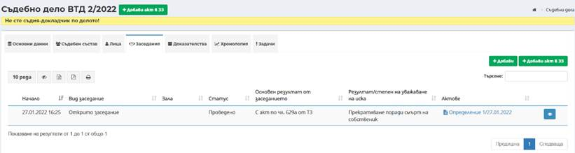
Чрез този таб има възможност за насрочване и отразяване на провеждане на съдебни заседания по делата.
Добавяне на закрито
заседание става посредством избор на бутон
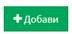
Забележка ! Системата генерира час на заседанието, който час е минал и по този начин заседанието автоматично става проведено!
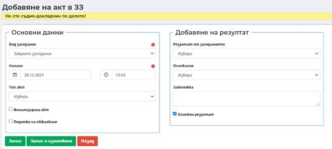
Важно! Чекбокс Финализиращ акт задължително се маркира преди Регистриране на съдебния акт/протокол, тъй като заедно с генериране на пореден регистрационен номер на акт се генерира и ECLI номер. В случай, че чекбокс Финализиращ акт се маркира след регистриране на акта/протокола, ECLI номер няма да се генерира.
Резултат/степен на уважаване на иска се избира посредством падащо меню.
При избор на финализиращ акт и в случай че съдебният състав по делото е непълен се извежда предупредително съобщение.
В случай, че акта подлежи на обжалване, може да бъде отбелязан преди изготвяне на съдебния акт посредством избор на чекбокс Подлежи на обжалване.
В частта Добавяне на резултат по подразбиране е маркиран чек бокс Основен резултат. Системата позволява добавянето на резултат да се извърши както преди изготвянето на съдебен акт, така и след това.
След избора на Тип
акт се избира бутон
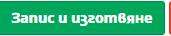 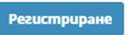
Чрез бутон Изпращане
за подпис
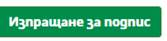
Посредством избор на
бутон Добави резултат
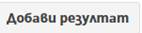
Когато в заседанието
няма изготвен съдебен акт системата или липсва резултата, системата изкарва
предупреждение посредством знак
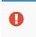 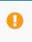
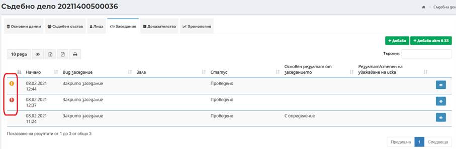
Добавяне на ново заседание става посредством избор на бутон . Отваря се екранната форма за въвеждане на основни данни за заседание, в която се въвеждат съответните данни:
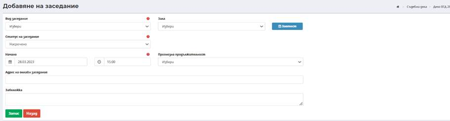
- Вид заседание – Избира се вида на заседанието в зависимост от вида на делото;
- Статус на заседанието – Избира се статуса на заседание. При добавяне на заседанието са активни статуси – насрочено и проведено. По подразбиране е зададен статус насрочено. Когато в заседанието липсва активен съдия-докладчик и при промяна на статуса на заседанието от насрочено на проведено, системата изкарва спиращо съобщение.
Забележка: Заседания може да се нарочват само с бъдеща дата, проведени заседания преди текущата дата и час може да се добавят в статус проведено без да е необходимо насрочване. Това е приложимо основно за закритите заседания, които се отразяват след като са проведени. Не е възможно създаване на повече от едно заседание с един и същи начален час.
- Начало (дата) – Въвежда се дата на заседанието;
- Начало (час) – Въвежда се начален час на заседанието;
- Зала – избира се от падащ списък с предварително въведени зали на текущия съд залата за провеждане на заседанието. Полето не е със задължителен характер, но ако се избере полето Прогнозна продължителност е задължително. Преди избор на зала чрез избор на бутон Заетост може да се направи справка за графика на залите в съда.
- Прогнозна продължително – Въвежда се с цел планиране на графика на залите. Полето е обвързано с поле Зала.
- Адрес за онлайн заседания – в полето се поставя линка за насрочената онлайн среща.
- Забележка – При необходимост от въвеждане на допълнителна информация.
Забележка: При въвеждане на зала за заседание , което е планирано за период, в който залата е заета се извежда предупредително съобщение за заетост на залата. Съобщението няма стопиращ характер или избор на бутон Потвърди, може да се премине към запис на данните по заседанието.
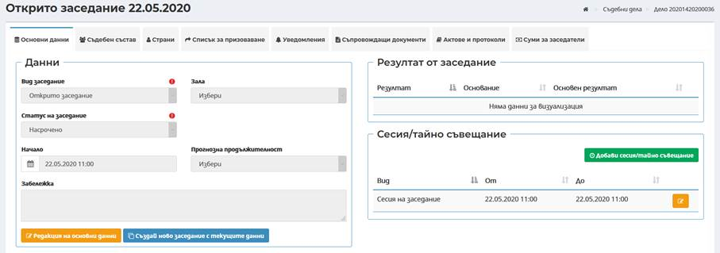
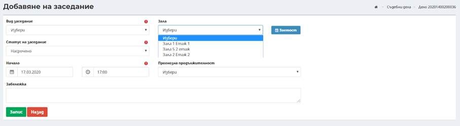
След въвеждане на всички изискуеми данни и избор на бутон Запис успешно се добавя ново заседание по делото.
След добавяне на заседание по делото се зареждат основните табове с информация за всяко едно заседания по делото – таб Основни данни, таб Съдебен състав, таб Лица, таб Списък за призоваване, таб Уведомления, таб Съпровождащи документи, таб Актове и протоколи и таб Суми за заседатели:
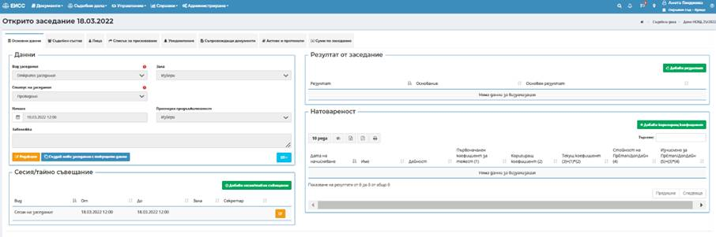
След създаване на всяко заседание системата създава автоматично служебна сесия на заседание с дата и начален и краен час според въведените дата, начален час и прогнозна продължителност по заседанието. В случай че не е избрана прогнозна продължителност начален и краен час съвпадат.